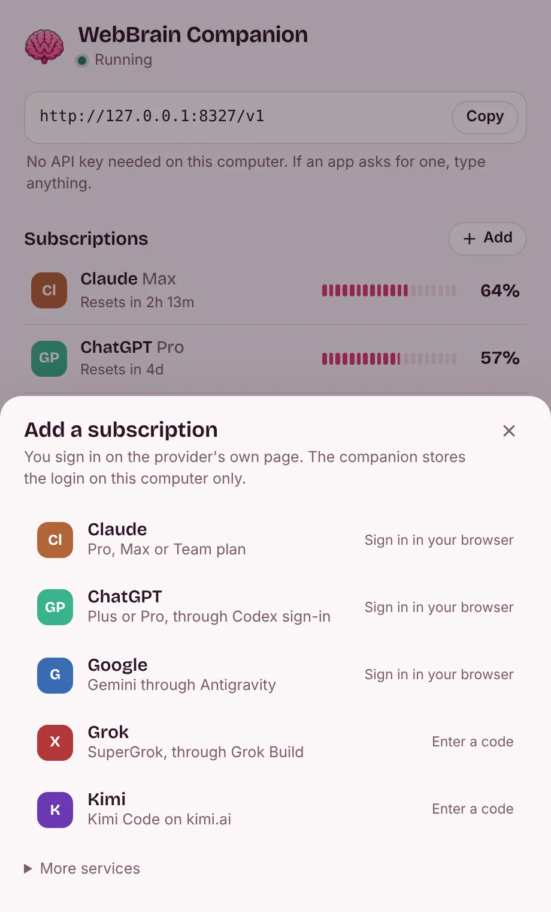
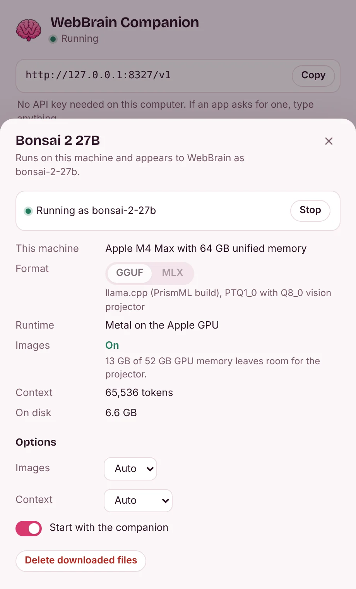

The AI plans you already pay for, ready for WebBrain
WebBrain Companion lives in your menu bar or system tray. Sign in to Claude, ChatGPT, Google, Grok or Kimi once, and WebBrain reaches all of them at one address on your computer. The tray shows how much of each plan is left and when it resets.
Everything else happens in one small panel
Click the icon to open it. One page holds the address for WebBrain, every plan with what's left, and the two local models; click a row for its details, or the gear for settings. It follows your light or dark setting and speaks English and Turkish.

One page
The address WebBrain needs, each plan with the limit closest to running out, and the local models with their main button. No API key on this computer.

Add a subscription
Sign in on the provider's own page. The login stays on your computer.

Local models
Click Bonsai 2 27B to see where it runs and whether images fit, and to change its options. d1 opens the same way.

Bonsai 2 27B, sized to your machine
PrismML's Ternary Bonsai 2 27B packs 27 billion parameters into 5.95 GB. The companion installs it with its Q8_0 vision projector and PrismML's build of llama.cpp, or as the MLX pack on Apple Silicon, and lists it next to your subscriptions as bonsai-2-27b.
Before anything downloads, it works out where the model runs and whether image input fits. The vision projector goes on the GPU when about 1 GB of GPU memory is left after the model and its context, on the CPU when only system RAM has room, and stays off otherwise. You can override the choice in the panel.
| Machine | Runs on | Image input | Context |
|---|---|---|---|
| MacBook Air, 8 GB | Apple GPU with Metal. It needs more memory than the Mac has, so expect swapping. | Off | 8K tokens |
| MacBook Pro, 16 GB | Apple GPU with Metal | On, GPU | 16K tokens |
| Laptop with an RTX 4060 (8 GB) and 16 GB RAM | CUDA, 57 of 64 layers on the GPU | On, CPU | 8K tokens |
| Desktop with an RTX 4090 (24 GB) and 64 GB RAM | CUDA, all on the GPU | On, GPU | 64K tokens |
| Desktop with a Radeon RX 7600 (8 GB) and 32 GB RAM | Vulkan, 61 of 64 layers on the GPU | On, CPU | 8K tokens |
| PC without a graphics card, 16 GB RAM | CPU | On, CPU | 8K tokens |
| PC without a graphics card, 8 GB RAM | CPU, with little room to spare | Off | 8K tokens |
Worked out by the companion's planner from total and free memory; the numbers on your machine at install time decide. On Apple Silicon the MLX pack carries its own vision tower, so images are always on.
WebBrain's decision model, outside the browser
WebBrain's d1 model answers yes/no, choice and score questions about a page and up to four screenshots, such as whether a task is finished. The companion runs it on ONNX Runtime and answers over HTTP, so a browser tab doesn't have to load 1.9 GB. Its Go port returns the same tokens and probabilities as WebBrain's JavaScript adapter. Native d1 is available on Windows, Linux and Apple Silicon Macs; it is unavailable on Intel Macs.
Ask
curl http://127.0.0.1:8327/companion/v1/decide \
-H "Content-Type: application/json" \
-d '{"state": "Order #1042 is confirmed.",
"questions": {"completion": {
"type": "choice",
"instructions": "Did the task finish?",
"criteria": {"completed": "Confirmed",
"not_completed": "Failed or unfinished",
"unknown": "Not established"}}}}'Answer (273 ms on the CPU runtime)
{"answers": {"completion": {
"choice": "completed",
"confidence": 0.99997,
"probabilities": {"completed": 0.99997,
"not_completed": 0.000002,
"unknown": 0.000033}}},
"diagnostics": {"runtime": "onnxruntime 1.31.0 (CPU)", …}}Connect WebBrain
You do this once. Apps on this computer need no API key.
- Install the companion and open it. Add a subscription in its panel and finish the sign-in in your browser.
- Copy the address,
http://127.0.0.1:8327/v1, from the panel or the tray menu. - In WebBrain, open the Providers page (More… in the side panel's model menu), choose Local OpenAI-compatible Proxy and paste the address in place of the 8317 WebBrain fills in. WebBrain asks for an API key: type anything.
- Click Load models, pick a model, and run Test Connection. Turn on vision only for a model that accepts images.
Any OpenAI, Anthropic or Gemini client on this computer can use the same address. To use it from another device, turn on network access in the panel's settings; that device then needs the API key the panel shows.
Download
Version 0.1.2. Each package holds a single program; your settings and logins live in your user folder.
macOS
macOS 12 or later, Apple Silicon and Intel (d1 requires Apple Silicon)
Your systemMove WebBrain Companion to Applications. The build is not notarized by Apple: the first time, allow it in System Settings, Privacy & Security (Open Anyway). On macOS 14 and earlier, Control-click it and choose Open.
Windows
Windows 10 and 11, x64 and Arm64
Your systemRun the installer: it installs for your account, without an administrator prompt, and adds WebBrain Companion to the Start menu. Until the installer is code-signed, SmartScreen may say "Windows protected your PC": choose More info, then Run anyway.
Linux
x64 and Arm64
Your systemUnpack and run webbrain-companion. The icon needs a StatusNotifierItem tray: KDE, XFCE, or GNOME with the AppIndicator extension.
Before you sign in
What stays on your computer
- On this computer no API key is needed: the companion answers only requests from 127.0.0.1 and turns away web pages, so a site you visit can't spend your plans. Browser extensions such as WebBrain and apps on this computer can use it.
- Other devices can connect only if you turn on network access in the panel's settings. It then listens on 0.0.0.0, and they need the API key the panel shows.
- Logins are stored in your user folder and sent only to the provider they belong to.
- There are no analytics. Apart from the providers you sign in to, it only fetches CLIProxyAPI's public model list, and, when you install a model, its files from Hugging Face, GitHub and, for MLX, PyPI.
- Prompts sent to a subscription still go to that provider. Only Bonsai 2 27B and d1 run on your machine.
What your provider decides
- A subscription that works through a proxy is not the same as one the provider allows. Anthropic's consumer terms restrict automated access outside an API key, and Google's Gemini CLI terms say its sign-in may not be used with third-party tools.
- Check the terms of your plan and region before you add it. If an account matters to you, a provider API key is the safer route.
- Keep network access off on public Wi-Fi, and never forward port 8327 to the internet. The API key is not internet-grade security.